Scenario 1: Containerizing Apps
In this lab, you will build and containerize a simple web application that will be reused in later Kubernetes exercises. You will start by writing a lightweight HTTP service, package it into a Docker image, and deploy it using both docker run and Docker Compose.
The goal is to help you understand the complete container lifecycle and how a containerized workload is exposed to the outside world—first with Docker, and later with Kubernetes Services, Pods, and Deployments.
Goals
By the end of this lab, you will be able to:
- Build a basic web application (ExpressJS)
- Create a Dockerfile to containerize the application
- Build and run a container image locally
- Deploy the same workload with Docker Compose
- Preserve artifacts for reuse in Kubernetes Labs (Lab 2 and beyond)
Estimated Completion
1 Hr
Tasks
Task 1: Write a Basic Web Service (ExpressJS)
In this task, you will create a minimal HTTP service that can later be deployed as a Kubernetes Pod and Deployment.
1.1 Create the Application folder
cd ~/workspace
mkdir -p html5/lab1-express
cd html5/lab1-express
1.2 Initialize the Node.JS project
npm init -y
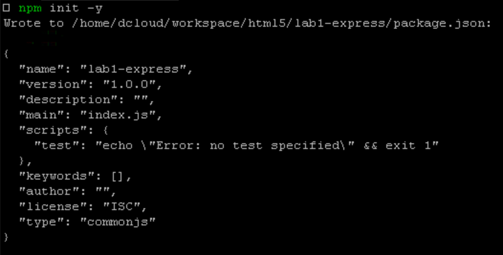
npm install express
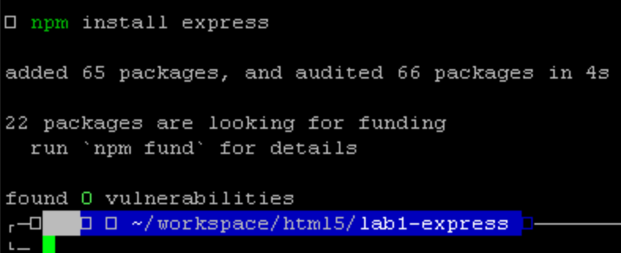
Expected Result:
A package.json file is created and Express is installed under node_modules/
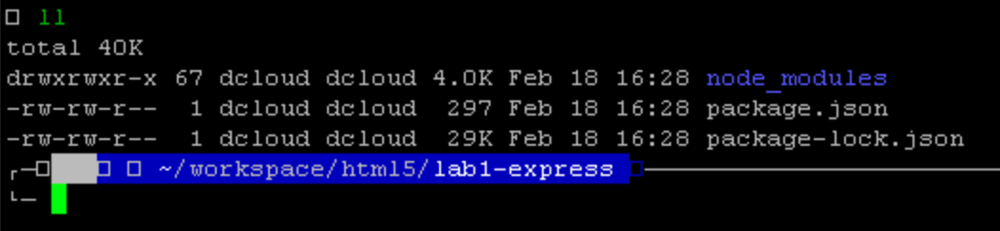
1.3 Create the application server
In the vscode server in chrome, create a file named server.js
const express = require("express");
const os = require("os");
const app = express();
const port = process.env.PORT || 3000;
app.get("/", (_req, res) => {
res
.type("text/plain")
.send(
`Hello from Express!\n` +
`Hostname: ${os.hostname()}\n` +
`Time: ${new Date().toISOString()}\n`,
);
});
app.get("/health", (_req, res) => {
res.json({ status: "ok" });
});
app.listen(port, () => {
console.log(`App listening on port ${port}`);
});
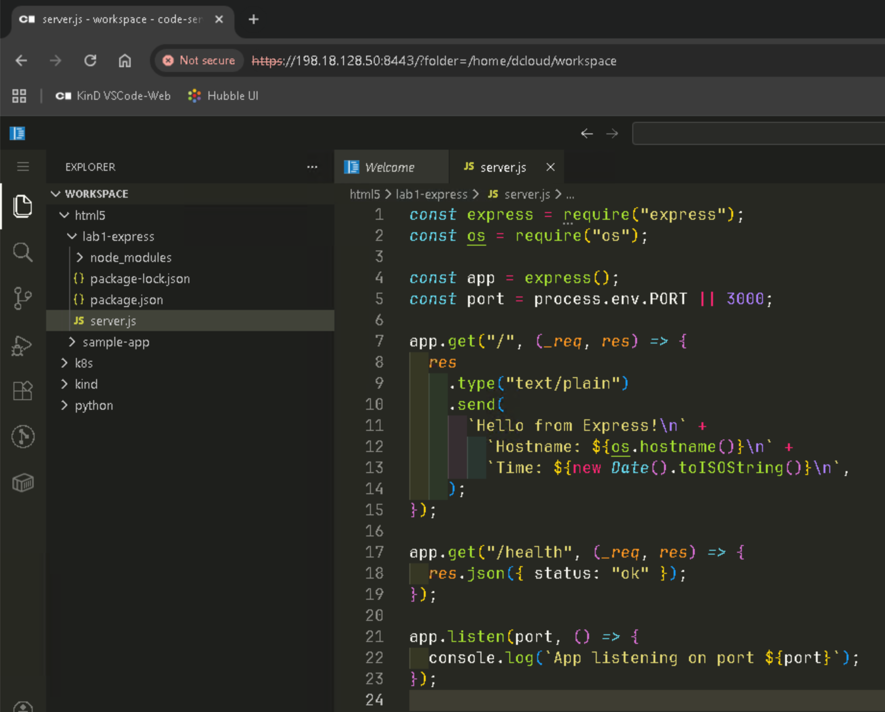
1.4 Run a quick local test (optional)
node server.js
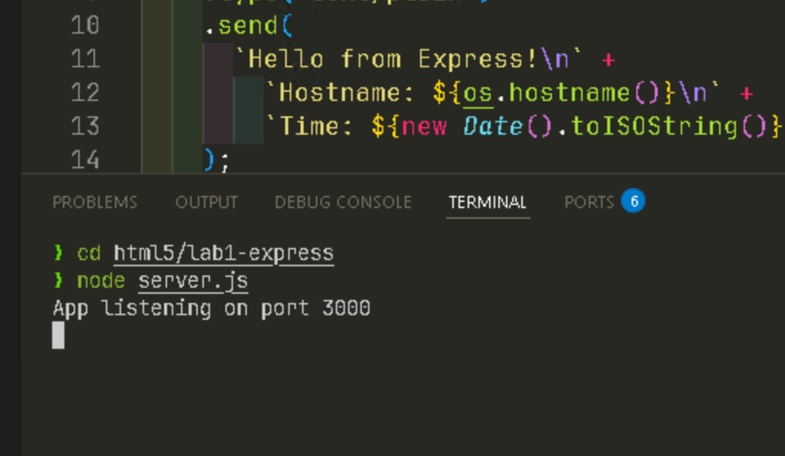
In code-server open a second terminal,
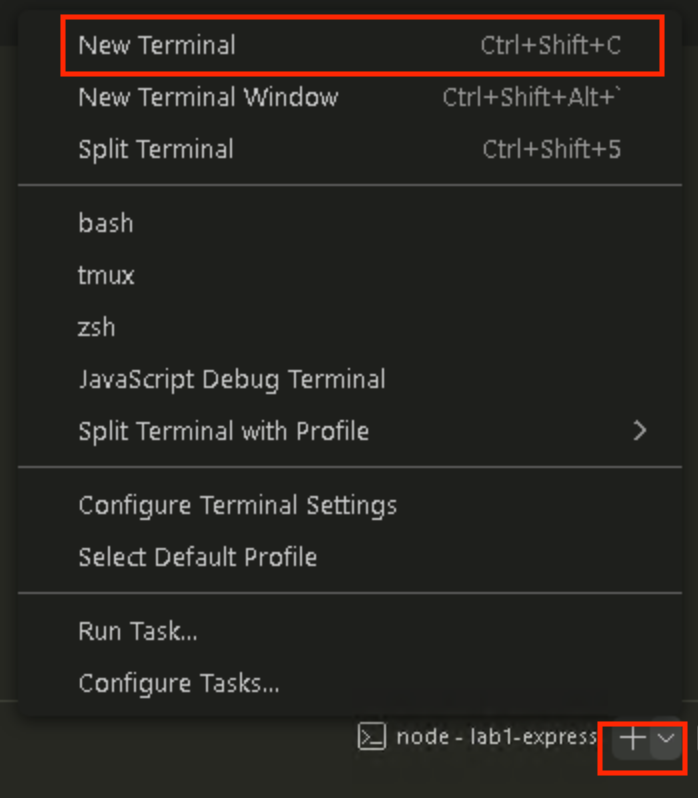
run:
curl http://localhost:3000
curl http://localhost:3000/health
Expected Result:
/returns a greeting and hostname
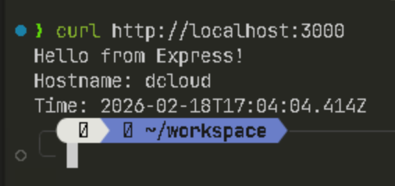
/healthreturns JSON:
{ "status": "ok" }
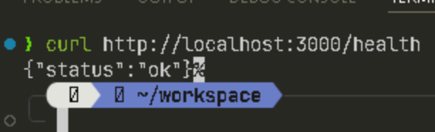
Stop the app with CTRL+C
Task 2: Containerize the App (Create a Dockerfile)
Now you will define the container runtime environment for this service.
2.1 Create the Dockerfile
In the same directory, create Dockerfile
FROM node:20-alpine
WORKDIR /app
COPY package*.json ./
RUN npm i
COPY server.js ./
ENV PORT=3000
EXPOSE 3000
CMD ["node", "server.js"]
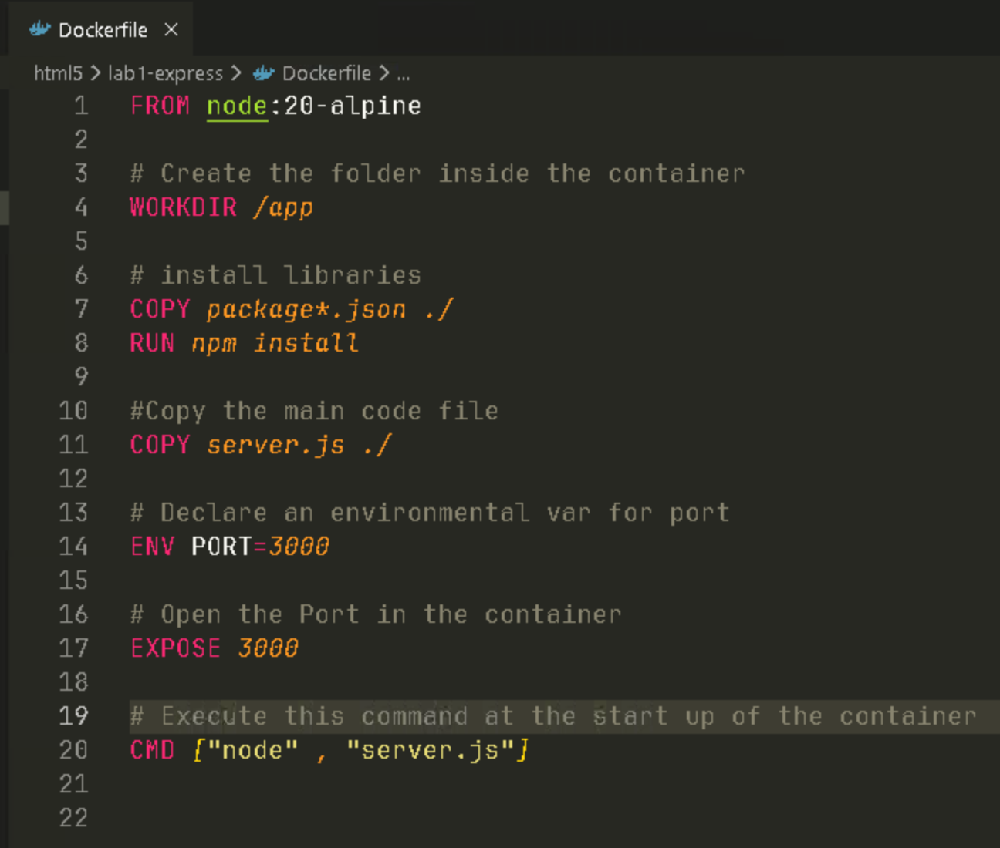
Expected Result:
- server.js
- package.json
- Dockerfile
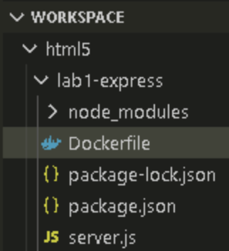
Task 3: Build the Container Image
You will now build the Docker image that packages the application.
Open a terminal in the code server
Run:
docker build -t lab1-express:1.0 .
Note: pay attention to the . (dot) at the end
Verify the image:
docker images | grep lab1-express
Expected Result:
lab1-express 1.0 ...
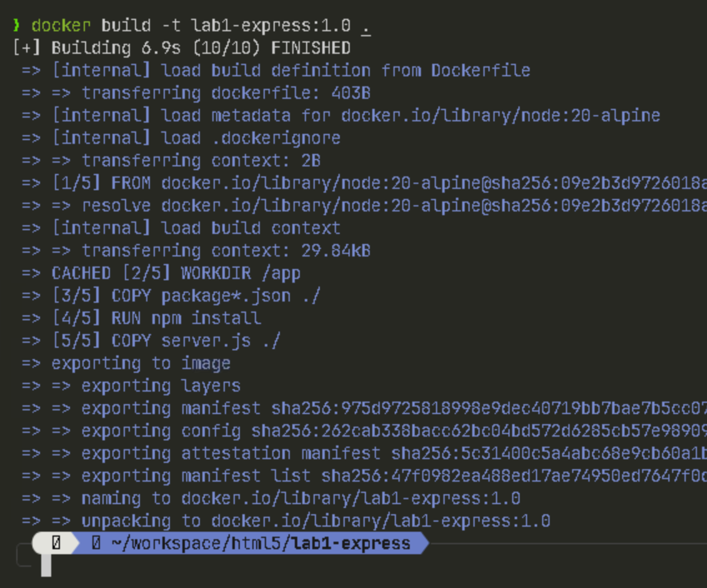
Task 4: Deploy with docker run
Next, you will run the container and expose it externally using port mapping.
4.1 Start the container
docker run --name lab1-express -d -p 8080:3000 lab1-express:1.0
This maps port 3000 inside the container to port 8080 on the host, which is the same concept Kubernetes Services will provide later.
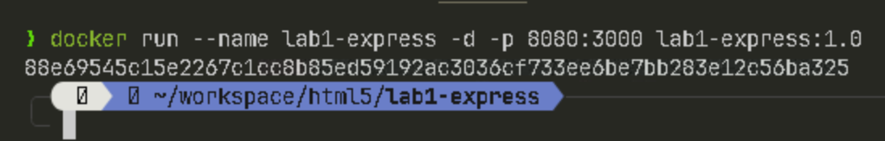
4.2 Validate connectivity
curl http://localhost:8080
curl http://localhost:8080/health
Expected Result:
- The app is reachable on port
8080 - You receive a response similar to:
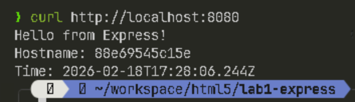
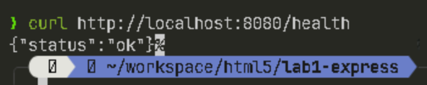
Task 5: Deploy with Docker Compose
Docker Compose provides a declarative way to run containerized workloads, similar in spirit to Kubernetes manifests.
5.1 Create a Compose file
Create a compose.yaml:
services:
express:
image: lab1-express:1.0
container_name: lab1-express-compose
ports:
- "8081:3000"
environment:
- PORT=3000
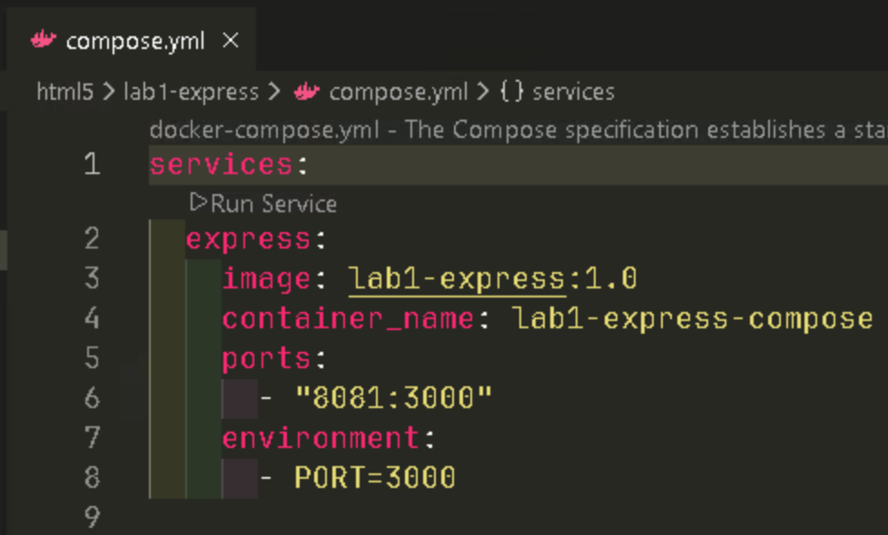
5.2 Start the service
docker compose up -d
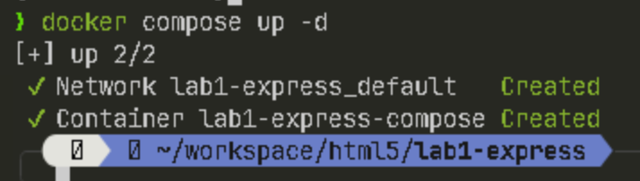
docker compose ps
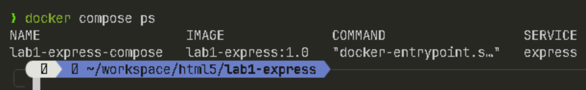
5.3 Validate access
curl http://localhost:8081
Expected Results:
The application is now reachable via Compose on port 8081.
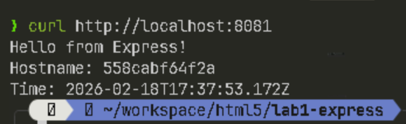
Task 6: Cleanup (Stop Workloads, Preserve Artifacts)
This lab’s application and images will be reused in Lab 2 (Kubernetes Pods and Deployments). Cleanup should remove running containers, but must not delete source code or images.
6.1 Stop Compose workloads
docker compose down
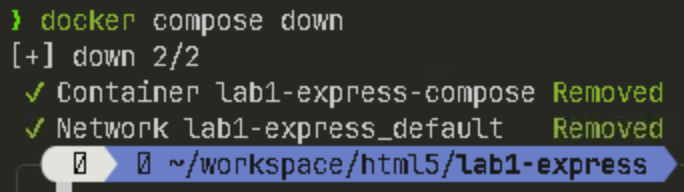
6.2 Remove the standalone container
docker rm -f lab1-express 2>/dev/null || true
6.3 Confirm no containers remain
docker ps | grep lab1-express
docker image ls
Expected Result:
No running Express containers remain, but the image and files are preserved.
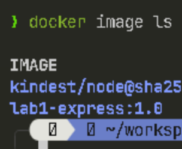
Reuse in Lab 2 (Important)
The following artifacts created in Lab 1 will be reused later:
- Application source:
~/workspace/html5/lab1-express/server.js - Container definition:
~/workspace/html5/lab1-express/Dockerfile - Built image:
lab1-express:1.0
In Lab 2, you will redeploy this same workload as:
- A k8s Pod
- A k8s Deployment
- Exposed externally via k8s Service
Optional Add-On: Static Website with NGINX
To demonstrate a front-end style workload, you may also containerize a static HTML site served by NGINX.
This is optional, but useful for understanding that Kubernetes supports both:
- API microservices (Express/FastAPI)
- Static web frontends (NGINX)
Add-On Task: Build a Static Site Container
A.1 Create a static site directory
cd ~/workspace/html5
mkdir -p lab1-nginx-static
cd lab1-nginx-static
A.2 Create an index.html
<!DOCTYPE html>
<html>
<head>
<title>Lab 1 Static Site</title>
</head>
<body>
<h1>Hello from NGINX!</h1>
<p>This is a static site running inside a container.</p>
</body>
</html>
A.3 Create the Dockerfile
FROM nginx:alpine
COPY index.html /usr/share/nginx/html/index.html
EXPOSE 80
A.4 Build and run
docker build -t lab1-static:1.0 .
docker run --name lab1-static -d -p 8082:80 lab1-static:1.0
Test:
curl http://localhost:8082
Expected Result:
<h1>Hello from NGINX!</h1>
A.5 Delete Container
docker rm -f lab1-static
A.6 Challenge
Create a Docker Compose file for this nginx container and publish it on port 8083.
- The service should start with docker compose up -d
- The page should be reachable at http://localhost:8083
Expected Result
Running curl http://localhost:8083 returns the static HTML page.
Hint:
- Your compose file will need an nginx service with a ports: mapping of
"8083:80" - Use the image you created in step A.4
- None environmental variables are required
Lab Completion
Congratulations! You have completed Lab 1.
You now have a containerized workload that will serve as the foundation for Kubernetes deployments in the next lab.